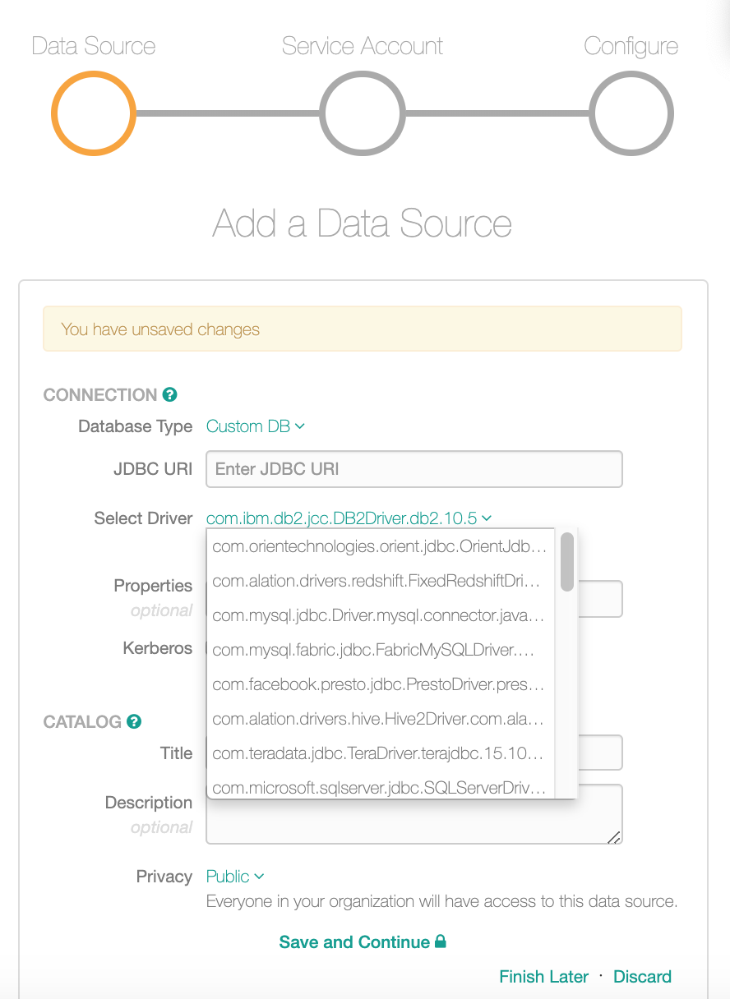
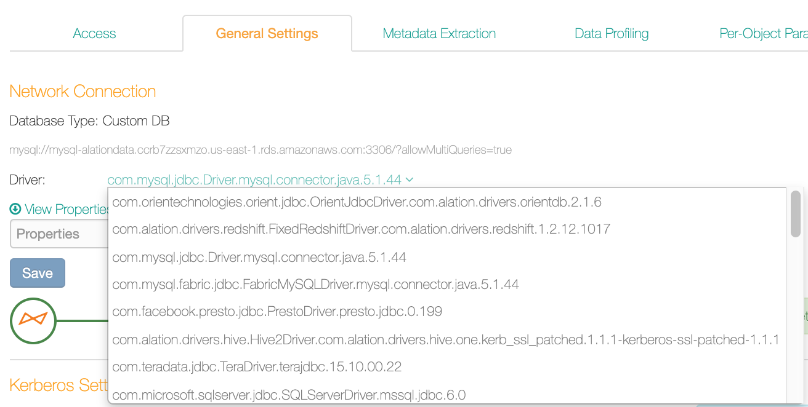

Add Custom Drivers¶
You can use both built-in or custom drivers with Custom DB. If the driver you need is not available in Alation, then before you add your Custom DB data source, add the driver to the Alation server.
Releases V R4 (5.8.x) - V R7 (5.12.x)
Alation recommends using Java 9-compatible drivers.
Release 2020.3.x and newer releases
Alation recommends using Java 11-compatible drivers. However, Java 9-compatible drivers are also expected to work.
Prerequisites¶
Before adding the driver, make sure that the following requirements are met:
The admin user has server-side access with the sudo privileges.
The custom driver is a JDBC driver implementing the JDBC interface.
The driver can be packaged as a single .jar file or as multiple .jar files. Alation supports loading custom drivers from a directory. If a single driver needs to be loaded from multiple .jar files, they all can be placed in a single directory in the Custom Driver path.
The .jar file includes a valid manifest file which declares the class that implements
org.sql.Driverinterface.The .jar file is compiled for Java 9 (releases V R4 (5.8.x) - V R7 (5.12.x)) or 11 (release 2020.3.x and newer).
Note
JDBC drivers do not always generate a clear error message stating that they cannot run in Java 9 or 11. The best way to find out which Java versions the driver is compiled for is to check the driver documentation.
For Hive with Kerberos authentication added as Custom DB, to use Profiling, ensure that the JDBC driver supports the
setQueryTimeoutfunction.Note
If the JDBC driver does not support the
setQueryTimeoutfunction, you may see the following error message when profiling a Kerberized Hive source:‘java.sql.SQLFeatureNotSupportedException: [DataDirect][Hive JDBC Driver]Unsupported method: Statement.setQueryTimeout’
Possible workaround:
Some JDBC drivers have a parameter to silently ignore the
setQueryTimeoutfunction without throwing an exception. You can set that property accordingly to avoid this exception. For example, for the Progress JDBC driver for Hive, this can be fixed by appending{"QueryTimeout":"-1"}to the connection URI. After this parameter is added to the connection URI, users can run profiling without seeing this exception.
Moving the Driver to Alation¶
Fixing the Driver Before Using it in Alation¶
Some custom drivers may not work properly with Alation if used out of the box. In many cases, the problems can be solved by the driver fixer tool. The driver fixer will analyze custom drivers and fix some of the most common problems. See Driver Fixer for information on how to use this tool.
Driver Installation¶
Some drivers may require installation on the server where you are going to use them. Refer to the driver documentation for details about the installation of a specific driver. If your custom driver requires installation, first create a directory on the Alation sever, copy the executable files to this directory and install the driver from the Alation shell. The .jar file with the actual driver and, sometimes, the license file, should become available after you unpack the driver.
License¶
Some drivers may require a license. Refer to the driver documentation to find out if a license is needed to use the driver. If yes, make sure you have the license or know which file it is if it is packaged with the driver. You will need to put the license file alongside the driver .jar file on the Alation server.
Steps¶
To add a custom driver to Alation,
Copy the driver .jar and the license (if required) to a directory on the Alation host, for example /tmp:
scp </path/to/driver> <your_username@alation_host>:/tmp/ scp </path/to/license> <your_username@alation_host>:/tmp/
Use SSH to connecto to the Alation server.
Go to the directory /opt/alation/alation-<XXXX>/data1/site_data/custom_drivers/. <XXXX> stands for your Alation version, for example:
cd /opt/alation/alation-5.14.0.113546/data1/site_data/custom_drivers/
Move the driver and the license file (if required), to this directory:
sudo cp /tmp/<driver>.jar . sudo cp /tmp/<license>.lic .
Enter the Alation shell:
sudo /etc/init.d/alation shell
Go to the /custom_drivers directory inside the shell:
cd opt/alation/site/site_data/custom_drivers/
If necessary, from this location, run the driver fixer to fix the driver. Substitute
<version>with the actual version you find in the java directory.Releases V R4 (5.8.x) - V R7 (5.12.x)
sudo /opt/java/jdk-<version>/bin/java -jar /opt/alation/django/connector/tools/driver-fixer-0.0.1-jar-with-dependencies.jar -i <input_file_name>.jar -o <output_file_name>.jar
Releases 2020.3.x and newer
sudo /opt/java/amazon-corretto-<version>-linux-x64/bin/java -jar /opt/alation/django/connector/tools/driver-fixer-0.0.1-jar-with-dependencies.jar -i <input_file_name>.jar -o <output_file_name>.jar
After the driver is fixed, change the fixed driver file ownership to
alation:sudo chown alation:alation <output_file_name>.jar
Remove the original driver (the input driver .jar) from the custom_drivers directory.
The fixed driver should become available in Alation. If you have the Add Data Source or the General Settings tab open, a page refresh is required for you to see the driver in the list of drivers.
List of drivers on the Add Data Source screen:
{kind=link}
List of drivers on General Settings tab of a data source:
{kind=link}
Troubleshooting¶
If the custom driver does not show up in the driver list in Alation, this can be due to:
Using a non-JDBC driver
A conflicting class definition in the driver
A licensing issue
A class or module name not defined in the appropriate format.
To troubleshoot:
Check that you are using a JDBC driver.
If your driver is not a JDBC driver, the logs may not show any exceptions, but you will not see the driver in the user interface. Alation only supports JDBC drivers.
Check the logs for specific driver loading-related exceptions.
Check
taskserver.logat /opt/alation/site/logs/ inside the Alation shell.Check the driver for Java 9 or 11 compatibility.
If you haven’t done so yet, use the driver fixer tool to fix the driver. See Driver Fixer.
Check if the output file is named correctly.
If you are using the driver fixer tool, make sure the output file with the fixed driver uses the required naming convention.
Check if installation or a license is required.
Check for correct permissions.
If you are using the driver fixer, after the .jar is fixed, make sure the owner is changed to
alationwithchown alation:alation <fixed-driver>.jar.